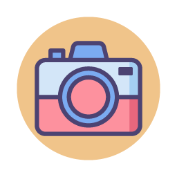

Andrezza Almeida
SOBRE
Designer gráfica formada pela Faculdade de Tecnologia Senac Goiás. Curiosa, observadora, divertida e orgulhosamente baiana. Experiência em diagramação de revistas, criação de layout e desenvolvimento de sites (HTML, CSS, WordPress), banners, posts para redes sociais, materiais digitais e gráficos. Atualmente, estudando Desenvolvimento Front-End pela {reprograma}, na Estação Hack do Facebook.
Meus Hobbies
O que gosto de fazer
-
Confeitaria
-
Investimentos
-
Scrapbook
-

Animes
-

Netflix
-

Viajar
-

Fotografia